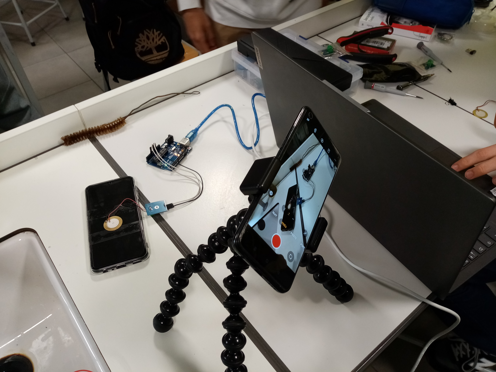

Ces différentes images nous montrent les différents setups utilisés. Pour l’arc, il s’agit d’un premier setup expérimental, des améliorations sont à l’étude.


Grâce à nos trois expériences, nous avons pu démontrer que la conversion de son en électricité était possible. Nous avons utilisé des appareils qui généraient une quantité de vibrations quantifiable par un capteur piézoélectrique. Le son est donc une source d’énergie potentielle très grande notamment en ville où la moyenne est de 50 dB en période calme (70 dB en région parisienne).
Ces différentes images nous montrent les différents setups utilisés. Pour l’arc, il s’agit d’un premier setup expérimental, des améliorations sont à l’étude.